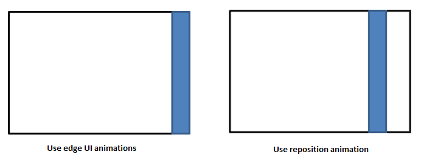

Edge-based UI animations
Edge-based animations show or hide UI that originates from the edge of the screen. The show and hide actions can be initiated either by the user or by the app. The UI can either overlay the app or be part of the main app surface. If the UI is part of the app surface, the rest of the app might need to be resized to accommodate it.
Important APIs: EdgeUIThemeTransition class
Do's and don'ts
Use edge UI animations to show or hide a custom message or error bar that does not extend far into the screen.
Use panel animations to show UI that slides a significant distance into the screen, such as a task pane or a custom soft keyboard.
Slide the UI in from the same edge it will be attached to.
Slide the UI out to the same edge it came from.
If the contents of the app need to resize in response to the UI sliding in or out, use fade animations for the resize.
- If the UI is sliding in, use a fade animation after the edge UI or panel animation.
- If the UI is sliding out, use a fade animation at the same time as the edge UI or panel animation.
Don't apply these animations to notifications. Notifications should not be housed within edge-based UI.
Don't apply the edge UI or panel animations to any UI container or control that is not at the edge of the screen. These animations are used only for showing, resizing, and dismissing UI at the edges of the screen. To move other types of UI, use reposition animations.

Related articles
For developers